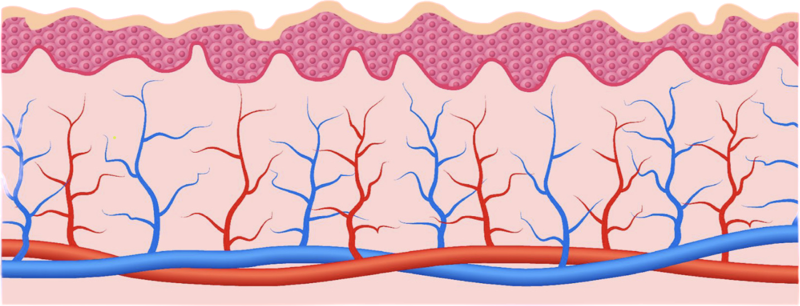
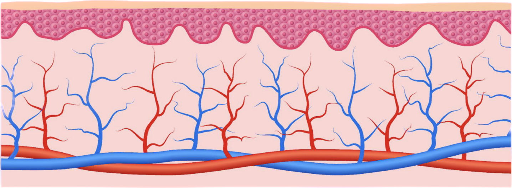

Коллаген
Коллаген — это белок, который является строительным материалом для связок, сухожилий, суставов нашего организма.
Обеспечивает прочность и эластичность тканей и органов.
Коллаген — основа соединительной ткани, от качества которой зависит состояние тканей и систем всего организма.

COLLA GEN
биокомплекс из коллагенсодержащего сырья птицы в форме гидролизата.
Легко усваивается в организме и синтезирует собственный коллаген.
Основной строительный материал сухожилий, связок, хрящей, отвечает за их прочность и эластичность. Присутствует в суставах, костях, кровеносных сосудах, волосах, коже и ногтях.
Расширенный состав:
Аминокислоты (г на 100 г):
Глицин - 23,41
Аланин - 9,14
Валин - 2,43
Лейцин - 3,00
Изолейцин - 1,76
Оксипролин - 10,4
Серин - 2,86
Треонин - 2,26
Пролин - 11,86
Метионин - 1,24
Аспарагиновая кислота - 5,51
Глутаминовая кислота - 10,24
Лизин - 3,8
Оксилизин - 1,19
Аргинин - 8,01
Гистидин - 0,81
Тирозин - 073
Фенилаланин - 2,23
у-аминомасляная - 0,04
Макроэлементы (мг на] кг):
Са - 592,63
К-14358
Na-712,2
Mg - 10717
Микроэлементы (мг на1 кг):
Zn - 6,77
Fe - 960
Cu - 087
АI - 1015
Ni - 217
Жирные кислоты (мг на100 г):
Пальмитиновая - 289
Стеариновая -12
Олеиновая - 234
Линолевая -27
Линоленовая - 73
Коллаген в организме
40% кожа
32% внутренние органы
20% кости и суставы
8% Стенки кровеносных сосудов
80% организма составляет соединительная ткань
«Человек стар настолько, насколько стара его соединительная ткань»
Илья Ильич Мечников
Русский и французский биолог
Зачем коллаген организму
Волосы и ногти
Являются производными эпидермиса — коллаген влияет на их силу и здоровье
Кости
Коллаген помогает усваивать кальций. Его нехватка приводит к ломкости костей
Связки
От коллагена зависит их прочность
Кожа
90% кожных проблем связано с потерей коллагена
Глаза
Коллаген основное вещество ткани роговицы и конъюнктивы глаза. Предотвращает ухудшение зрение и проблемы с глазами
Зубы
Коллаген — основное вещество ткани десны. Помогает избежать проблем с деснами и зубами
Внутренние органы
Коллаген — соединительное вещество всех клеток организма: Помогает поддерживать структуру внутренних органов
Суставы и хрящи
Недостаток коллагена приводит к распаду тканей сустава, артриту и пр
Сухожилия и мышцы
Нехватка коллагена приводит к бессилию сухожилий и мышц
Выработка коллагена
26 До 26 лет в организме вырабатывается 6 кг в год
35 В 35 лет — 3 кг в год
45 После 45 лет — коллаген почти не вырабатывается
Информированность и потребление коллагена в мире
90% япония
70% индия
66% США
60% Китай
18% Россия
В России за 2020-2021 годы запросы в интернете про коллаген выросли в 20 раз.
Виды коллагена
КРС (Свиной, бычий)
II тип
- Суставы, хрящи, связки, сосуды
- Молекулярная масса 300-400 Дт.
- Аллергичный
- БАДЫ
- Наиболее дешёвое производство
МОРСКОЙ (рыбный)
I, III тип
- Кожа, волосы, ногти,
- Молекулярная масса 40 кДт
- Менее аллергенный
- БАДЫ, косметика
- Дорогое производство
КУРИЦА
I, II, III тип Универсальный
Растительного коллагена не существует!
Формы коллагена
Пищевой продукт: Гидролизат — живой коллаген
БАД: Гидролизированный коллаген — восстановленный из сухого
БАД: Сухой коллаген, который нужно принимать с витамином С
Еда с содержанием коллагена Холодец, хаш, мясо, рыба, желатин животного происхождение ит.д.
Способы восполнения дефицита коллагена

БАД: сухой
Был денатурирован (структура белка была разрушена) в процессе производства, в результате потерял свои полезные свойства и усваивается как обычный белок
Требует дополнительного приема витамина С

БАД: гидролизированный коллаген — восстановленный из сухого
Был денатурирован (структура белка была разрушена) в процессе производства, в результате потерял свои полезные свойства и усваивается как обычный белок
Требует дополнительного приема витамина С
Еда с содержанием коллагена: холодец, хаш и тд,
Проблемы: ЖКТ, камни в почках, подагра.
ПРОТИВОПОКАЗАНО из-за большого содержания жиров и белков животного происхождения
Для восстановления суточной нормы коллагена (= 10 т) необходимо употребить более 10 кг холодца,
Допустимо, до 100-150 граммов за 1 рам!
Пищевой продукт: Гидролизат ЖИВОЙ КОЛЛАГЕН
Без воздействия критически высоких/ низких температур = НЕТ денатурации
Сохраняет полезные свойства (целостность пептидных связей)
Организм дает адекватный ферментативный ответ и усваивает его запускает синтез собственного коллагена
Не требует приема витамина С
Производство живого коллагена
1
Гидролиз
Рзделение
2
Экстракция
Выделение
3
Центрифу-гирование
Отжим
4
Фильтрация
Очистка
Без сушки!
Коллаген ЖИВОЙ, так как не подвергается действию критически высоких и низких температур.
Весь процесс производства происходит при температуре не выше 59°С, что позволяет сохранить последовательность аминокислот в цепочках коллагена целостной - ЖИВОЙ
Преимущества Живого коллагена
Характеристика
Живой коллаген
Морской
Бычий и свиной
Технология производства
Запатентованная технология, нет аналогов
Стандартная технология
Стандартная технология
Форма коллагена
Гидролизат
Сухой, восстановлен из сухого
Сухой, восстановлен из сухого
Типы коллагена
I, II, III
I и III
II
Природный эластин в составе
да
нет
нет
Комплексное воздействие
да
нет
нет
Области воздействия
кожа, волосы, ногти, сосуды суставы, хрящи, связки
суставы, хрящи, связки
кожа, волосы, ногти, сосуды,
Разномолекулярность
да
нет
нет
Молекулярная масса
12-270 кДа
300-400 кДа
20-40 кДа
Денатурация
выше 59° С
при 15° С
при 60°С
Температура производства
до 59° С
от 30°С
от 80°С
Аллергенность
нет
да
да
Свойства энхансера
да
да
нет
Свойства эмолента
да
нет
да
Запуск коллагенеза
да
да
нет
Формы коллагена
Разработка советских ученых
Гидролизат из коллагенсодержащего сырья птицы
Усвояемость организмом 98%
Универсальный — содержит I, II и III тип.
I и III для кожи, волос и внешней красоты, II для суставов и связок
Гипоаллергенен, безопасен.
Функциональное питание, не БАД.
Не требует приема витамина С
Сырье от лучших ЭКО птицефабрик
Запускает синтез собственного коллагена
Живой коллаген
Другой коллаген

Коллаген в спорте
Помогает выдерживать большие нагрузки во время
тренировок
Ускоряет процессы восстановления костей, сухожилий,
суставов после травм
Снижает травматичность
Улучшает настроение и повышает стрессоустойчивость
Укрепляет соединительную ткань
Улучшает приток крови к мышечной массе
Развивает в теле гибкость и пластичность
Повышает скорость обмена веществ
Улучшает спортивные показатели
Красивые волосы, ногти и кожа

Профилактика: 10 г коллагена в день
Повышают уровень иммуноглобулинов
Сохраняют увлажненность и целостность слизистых
Усиливают иммунитет
Повышают скорость обмена веществ
Укрепляют кости, сухожилия суставы
Повышают стрессоустойчивость
Снимают неприятные «ноющие» ощущения в местах давних травм
Омолаживают организм
Оздоравливают центральную нервную систему
Восстанавливают бодрость и ясность мышления

Реабилитация
Мышечная слабость и быстрая утомляемость — одно из осложнений после вирусных и простудных заболеваний.
Живой коллаген помогает быстрее вернуться к жизни и тренировкам после болезни, потому что:
- коллаген формирует четкую структуру мышц
- коллаген делает мышцы эластичными и сильными
- коллаген выполняет опорно-механическую функцию
- коллаген делает сосуды эластичными
- коллаген укрепляет связки и суставы

Коллаген для кожи
До 25 лет коллаген в организме вырабатывается нормально, поэтому кожа младенцев, подростков и молодых девушек такая упругая
Кожа при недостатке коллагена
Кожа при достатке коллагена

Коллаген для кожи
Крупные молекулы
остаются на поверхности кожи. Восстанавливают гидролипидную мантию, сохраняют и защищают влагу внутри, разглаживают морщины
Средние молекулы
заполняют межклеточное пространство, присоединяют к себе воду и повышают упругость кожи
Мелкие молекулы
идут на построение собственного коллагена и биохимические процессы клетки в глубокий слой кожи
Коллаген для волос
Средние молекулы
работают на поверхности кожи с ее проблемами, убирают излишнюю сальность или сухость, выравнивают структуру и качество кожи 100-200 кДт
Мелкие молекулы
проникают в корни волос. Питают, запускают регенерацию и предотвращают выпадение волос до 40 кДт
Крупные молекулы
защищают кожу головы от внешних факторов и сохраняют влагу > 250 кДт
Коллаген для волос
Мелкие молекулы
уплотняют и утолщают волос до 40 кДт
Средние молекулы
выравнивают кутикулу, убирают пушистость 100-200 кДт
Крупные молекулы
защищают от внешнего агрессивного воздействия, создают эффект ламинирования > 250 кДт